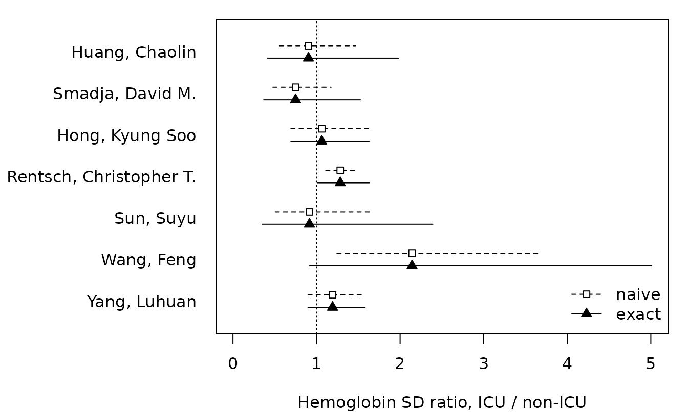

Two meta-analysis examples: a mean difference and a standard deviation (SD) ratio
Source:vignettes/two-meta-analyses.Rmd
two-meta-analyses.Rmd
library(meta5number)
has_mf <- requireNamespace("metafor", quietly = TRUE) # the random-effects fitsWhat the two examples show
This vignette assumes that the reader knows what
se_imputed_diff() returns: each group’s mean and SD,
imputed or sample, and each study’s effect estimate with its naive and
its exact standard error, in the columns that
vignette("meta5number") describes. Start there if the
columns, the scenarios or the conventions are new.
Wu, Shi and Tong (2026) apply the exact standard errors to two meta-analyses of COVID-19 patients, and this vignette runs both with the package. The first compares the mean blood urea nitrogen (BUN) of patients in intensive care (ICU) with that of the other patients. The second compares the variability of hemoglobin in the same two groups. In both, most studies report the three quartiles of each group in place of a sample mean and SD.
We run each meta-analysis twice: with the naive standard errors, which treat the imputed mean and SD as a sample mean and SD, and with the exact standard errors, which this package computes from the exact standard deviation of the imputed mean and SD under normality. The two runs share each study’s effect estimate and differ only in its variance . The examples show three things:
The pooled estimate changes little, by less than 5% in each of the four pairs of fits.
The estimated heterogeneity falls, because the larger within-study variances leave less of the spread of the to be attributed to heterogeneity between studies.
The standard error of the pooled estimate can rise or fall, depending on the model, and in the hemoglobin example the inference of the random-effects analysis is sensitive to which variances are used.
How large these changes are depends on the data. The examples illustrate the methodology, and they do not establish clinical conclusions. Every number in this vignette is computed when the vignette is built.
The data
The study summaries ship with this package as the data sets
bun_icu and hgb_icu. They come from the
systematic review of Katzenschlager et al. (2021) and are the data
frames that McGrath et al. (2023) published with their article. Group 1
(the columns ending in .g1) is the ICU group and group 2
(.g2) the non-ICU group, as the data classify the patients.
A study reports the three quartiles of each group, or a sample mean and
SD.
bun_icu[, 1:7] # the ICU group; the non-ICU columns end in .g2
#> author n.g1 q1.g1 med.g1 q3.g1 mean.g1 sd.g1
#> 1 Hong, Kyung Soo (YMJ) 13 NA NA NA 7.14 4.0698
#> 2 Liu, Yanli (Preprint) 53 4.00 5.50 7.10 NA NA
#> 3 Lei, Shaoqing (EClinM) 15 4.90 5.80 10.30 NA NA
#> 4 Zhang, Guqin (Preprint) 55 4.30 5.80 8.50 NA NA
#> 5 Wang, Feng (EP) 14 7.20 9.20 11.30 NA NA
#> 6 Wang, Dawei (JAMA) 36 4.30 5.90 9.60 NA NA
#> 7 Cao, Min (Preprint) 19 3.53 4.54 8.23 NA NAScreening the studies by a skewness test
The imputed mean and SD, and their exact standard errors, rest on the assumption that the data of a group are normal. Before imputing, we therefore apply the skewness test of Shi et al. (2023) to every group that reports the three quartiles , , with its sample size . At the 5% level, the test rejects normality when where the right-hand side is their approximate critical value. A study that reports the sample mean and SD of both groups enters the analysis directly. Any other study enters only if the test does not reject normality in either of its groups.
# TRUE when the skewness test rejects normality in a group that reports the
# three quartiles, FALSE when it does not, or when the group reports a mean
# and SD
rejects <- function(q1, med, q3, n) {
stat <- abs(q1 + q3 - 2 * med) / (q3 - q1)
!is.na(stat) & stat > 2.65 / sqrt(n) - 6 / n^2
}
# a study is kept when neither of its groups is rejected
keep <- function(d) {
!rejects(d$q1.g1, d$med.g1, d$q3.g1, d$n.g1) &
!rejects(d$q1.g2, d$med.g2, d$q3.g2, d$n.g2)
}
bun <- bun_icu[keep(bun_icu), ]
hgb <- hgb_icu[keep(hgb_icu), ]
c(BUN = nrow(bun), hemoglobin = nrow(hgb)) # the studies that are pooled
#> BUN hemoglobin
#> 5 7The test rejects normality in two of the seven BUN studies, which leaves five, and in none of the seven hemoglobin studies.
The two models
Both examples fit a common-effect model and a random-effects model.
Study
gives an effect estimate
with variance
,
and the pooled estimate and its standard error are
where
in the common-effect model, and in the random-effects model
is the restricted maximum likelihood (REML) estimate of the
between-study variance. The 95% confidence interval is
,
a normal approximation. The function pool_imputed() fits
the common-effect model twice from the output of
se_imputed_diff(), once with the naive and once with the
exact standard errors, and prints the two fits side by side. The
random-effects fits below use the metafor package
(Viechtbauer, 2010), which takes the columns yi,
sei_naive and sei as they are. We report the
heterogeneity by
and by the index
,
the share of the total variation of the
that is attributed to heterogeneity, in percent.
# the REML random-effects fit under each standard error: the pooled estimate
# with its 95% confidence interval, its standard error, tau^2, and I^2 in
# percent as metafor reports it. The control settings tighten the iteration,
# so that an estimate of tau^2 at its lower bound comes out as 0.
fit_reml <- function(d) {
ctrl <- list(tau2.init = 0, stepadj = 0.25, maxiter = 1000,
threshold = 1e-10)
one <- function(se) {
f <- metafor::rma(yi = d$yi, sei = se, method = "REML", test = "z",
control = ctrl)
c(estimate = as.numeric(f$b), ci.lb = f$ci.lb, ci.ub = f$ci.ub,
se = f$se, tau2 = f$tau2, I2 = f$I2)
}
rbind(naive = one(d$sei_naive), exact = one(d$sei))
}The mean difference of BUN
The effect estimate of a study is the difference of the two groups’
means, ICU minus non-ICU, in mmol/L. For a group that reports the
quartiles, the mean is the imputed mean, the best linear unbiased
estimator (BLUE) of the population mean from the three quartiles, and
for a group that reports its sample mean, it is that sample mean. The
naive standard error of an imputed mean is
and its exact standard error is
,
where
is the imputed SD and
is the standard deviation of the imputed mean in units of the population
SD
,
at the group’s own sample size
.
The variance
is the sum of the two groups’ squared standard errors. In the output
below, scenario.g1 is S2 for a group that
reports the three quartiles and sample for a group that
reports a sample mean and SD, and sei_naive and
sei are
under the naive and the exact calculation.
d_bun <- se_imputed_diff(bun) # the difference of means, ICU minus non-ICU
print(d_bun[, c("author", "scenario.g1", "yi", "sei_naive", "sei")],
digits = 4, row.names = FALSE)
#> author scenario.g1 yi sei_naive sei
#> Hong, Kyung Soo (YMJ) sample 1.928 1.1813 1.1813
#> Zhang, Guqin (Preprint) S2 2.129 0.4418 0.4736
#> Wang, Feng (EP) S2 4.795 1.0516 1.1145
#> Wang, Dawei (JAMA) S2 2.582 0.6968 0.7453
#> Cao, Min (Preprint) S2 1.049 0.8674 0.9210
ce_bun <- pool_imputed(d_bun) # the common-effect model
ce_bun
#> Pooled difference of means (group 1 minus group 2), common-effect model (EE), 5 studies
#> estimate se ci.lb ci.ub pval Q I2
#> naive SE 2.303 0.3141 1.688 2.919 2.262e-13 8.122 50.75
#> exact SE 2.302 0.3341 1.647 2.957 5.616e-12 7.229 44.67
#> 95% confidence intervals and p-values from the normal distribution. Q has 4 degrees of freedom, and I2 is in percent.
#> The weights in percent are $weights. Every field with str() or unclass().
re_bun <- fit_reml(d_bun) # the random-effects model
round(re_bun, 4)
#> estimate ci.lb ci.ub se tau2 I2
#> naive 2.4018 1.4063 3.3973 0.5079 0.6375 52.0779
#> exact 2.3737 1.4530 3.2945 0.4698 0.4172 38.8603For the four studies with imputed means, the exact standard error of the difference is 6.0% to 7.2% larger than the naive one. The pooled mean difference is nearly the same under the two calculations: 2.303 and 2.302 mmol/L under the common-effect model, and 2.402 and 2.374 mmol/L under the random-effects model. All four confidence intervals lie above zero.
The two calculations differ mainly in the estimated heterogeneity. In
the random-effects fit,
falls from 0.6375
(mmol/L)
under the naive standard errors to 0.4172 under the exact ones, and
,
as metafor reports it for this fit, from 52.1% to 38.9%.
The standard error of the pooled difference moves in opposite directions
under the two models. Under the common-effect model, the larger
reduce the total weight, and the standard error rises by 6.4%. Under the
random-effects model, the fall of
more than offsets the larger
,
and the standard error falls by 7.5%.
The SD ratio of hemoglobin
A meta-analysis of variability asks whether an outcome is more
dispersed in one group than in another. The effect estimate is the log
of the ratio of the two groups’ SDs, each imputed or, where the study
reports it, the sample SD,
,
the log variability ratio of Nakagawa et al. (2015) without its
small-sample correction term, as in Wu, Shi and Tong (2026). The
argument measure = "lnVR" of se_imputed_diff()
gives
with its two standard errors in place of the difference of means. The
pooled estimate and the limits of its confidence interval are
exponentiated to give the pooled SD ratio.
The variance of is the sum of one term per group, to first order in each group’s SD (the delta method). The naive calculation gives every group the term of a sample SD of normal observations, . The exact calculation keeps that term for a group that reports its sample SD and uses , the exact variance of the imputed SD in units of , where is the group’s population SD, for a group whose SD is imputed from the quartiles.
d_hgb <- se_imputed_diff(hgb, measure = "lnVR")
print(d_hgb[, c("author", "scenario.g1", "yi", "sei_naive", "sei")],
digits = 4, row.names = FALSE)
#> author scenario.g1 yi sei_naive sei
#> Huang, Chaolin (Lancet) S2 -0.10164 0.24677 0.4002
#> Smadja, David M. (Angiogenesis) S2 -0.28903 0.22942 0.3628
#> Hong, Kyung Soo (YMJ) sample 0.06062 0.21822 0.2182
#> Rentsch, Christopher T. (Preprint) S2 0.24990 0.07413 0.1221
#> Sun, Suyu (CCA) S2 -0.08845 0.30317 0.4901
#> Wang, Feng (EP) S2 0.76214 0.27735 0.4332
#> Yang, Luhuan (JCV) sample 0.17531 0.14422 0.1442
ce_hgb <- pool_imputed(d_hgb) # the common-effect model, on the log scale
ce_hgb
#> Pooled log variability ratio (SD of group 1 over SD of group 2), common-effect model (EE), 7 studies
#> estimate se ci.lb ci.ub pval Q I2
#> naive SE 0.1835 0.05676 0.07229 0.2948 0.001223 11.858 49.4
#> exact SE 0.1713 0.07919 0.01610 0.3265 0.030518 4.888 0.0
#> 95% confidence intervals and p-values from the normal distribution. Q has 6 degrees of freedom, and I2 is in percent.
#> exp() of the estimate and of the limits gives the ratio of SDs.
#> The weights in percent are $weights. Every field with str() or unclass().
re_hgb <- fit_reml(d_hgb) # the random-effects model, on the log scale
# the pooled SD ratio with its 95% confidence interval
round(exp(re_hgb[, c("estimate", "ci.lb", "ci.ub")]), 3)
#> estimate ci.lb ci.ub
#> naive 1.138 0.937 1.381
#> exact 1.187 1.016 1.386
round(re_hgb[, c("se", "tau2", "I2")], 4)
#> se tau2 I2
#> naive 0.0988 0.0294 48.4811
#> exact 0.0792 0.0000 0.0000For each of the five studies whose two SDs are imputed from the quartiles, the exact variance is 2.44 to 2.71 times the naive one. Under the common-effect model, the standard error of the pooled log ratio rises by 39.5%, and both confidence intervals of the SD ratio lie above 1. Under the random-effects model, falls from 0.0294 under the naive standard errors to 0 under the exact ones. With , the random-effects model has the weights of the common-effect model, so the two models give the same pooled SD ratio under the exact standard errors.
Under the random-effects model, the pooled SD ratio is 1.138 (0.937, 1.381) with the naive standard errors and 1.187 (1.016, 1.386) with the exact ones. The naive interval includes 1, and the exact interval does not. The two results differ only through the within-study variances , so the inference is sensitive to how these variances are calculated.
The plot below shows each study’s SD ratio with its 95% confidence interval under the two calculations. The exact interval is wider for every study with imputed SDs and the same for the two studies that report their sample SDs.
est <- exp(d_hgb$yi)
z <- qnorm(0.975)
half <- cbind(naive = z * d_hgb$sei_naive, exact = z * d_hgb$sei)
lab <- sub(" \\(.*$", "", d_hgb$author) # the first author
k <- nrow(d_hgb)
op <- par(mar = c(4, 11, 1, 1))
plot(NA, xlim = c(0, max(exp(d_hgb$yi + half))), ylim = c(0.5, k + 0.5),
yaxt = "n", ylab = "", xlab = "Hemoglobin SD ratio, ICU / non-ICU")
axis(2, at = k:1, labels = lab, las = 1, tick = FALSE)
abline(v = 1, lty = 3)
for (v in 1:2) { # 1 the naive interval, 2 the exact
y <- k:1 + c(0.15, -0.15)[v]
segments(exp(d_hgb$yi - half[, v]), y, exp(d_hgb$yi + half[, v]), y,
lty = c(2, 1)[v])
points(est, y, pch = c(22, 24)[v], bg = c("white", "black")[v])
}
legend("bottomright", legend = c("naive", "exact"), lty = c(2, 1),
pch = c(22, 24), pt.bg = c("white", "black"), bty = "n")
par(op)References
Katzenschlager S, Zimmer AJ, Gottschalk C, Grafeneder J, Schmitz S, Kraker S, Ganslmeier M, Muth A, Seitel A, Maier-Hein L, Benedetti A, Larmann J, Weigand MA, McGrath S, Denkinger CM (2021). Can we predict the severe course of COVID-19 - a systematic review and meta-analysis of indicators of clinical outcome? PLOS ONE 16(7), e0255154.
McGrath S, Katzenschlager S, Zimmer AJ, Seitel A, Steele R, Benedetti A (2023). Standard error estimation in meta-analysis of studies reporting medians. Statistical Methods in Medical Research 32(2), 373-388.
Nakagawa S, Poulin R, Mengersen K, Reinhold K, Engqvist L, Lagisz M, Senior AM (2015). Meta-analysis of variation: ecological and evolutionary applications and beyond. Methods in Ecology and Evolution 6(2), 143-152.
Shi J, Luo D, Wan X, Liu Y, Liu J, Bian Z, Tong T (2023). Detecting the skewness of data from the five-number summary and its application in meta-analysis. Statistical Methods in Medical Research 32(7), 1338-1360.
Viechtbauer W (2010). Conducting meta-analyses in R with the metafor package. Journal of Statistical Software 36(3), 1-48.
Wu Z, Shi J, Tong T (2026). Precision of the imputed mean and standard deviation from the five-number summary. Manuscript.